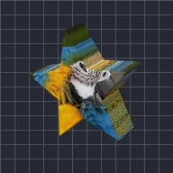

Bituing Prism

Hinihiwa ang layer sa hugis bituin at binibigyan ito ng lalim.
Mga Setting
| Setting | Uri | Saklaw | Default |
|---|---|---|---|
| Rotation X | Anggulo | -3600° hanggang 3600° | -20° |
| Rotation Y | Anggulo | -3600° hanggang 3600° | -35° |
| Rotation Z | Anggulo | -3600° hanggang 3600° | 0° |
| Puntos | Numero | 3 hanggang 12 | 5 |
| Radius | Numero | 0.02 hanggang 5 | 0.95 |
| Panloob na radius | Numero | 0.05 hanggang 1 | 0.45 |
| Lalim | Numero | 0.01 hanggang 5 | 0.25 |
| Pagpapakinis | Numero | 0 hanggang 1 | 0.15 |
| Posisyon | Punto (X, Y) | -5000 px hanggang 5000 px | 0 px, 0 px |
| Scale | Numero | 0.05 hanggang 10 | 1 |
| Perspective | Numero | 0 hanggang 1 | 0.5 |
| Shading | Numero | 0 hanggang 1 | 0.6 |
| Anggulo ng liwanag | Anggulo | -3600° hanggang 3600° | 135° |
| Kislap | Numero | 0 hanggang 1 | 0.3 |